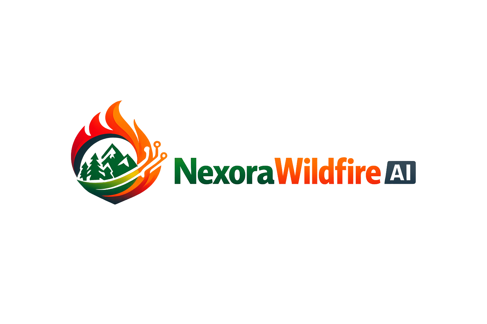

NEXORA / SAHA KİMLİĞİ
Profil yükleniyor…
Alanlarınız, bildirim tercihleriniz ve saha odaklı kullanım profiliniz burada toplanır.

Saha profili · çevresel istihbarat
Alanlarınız, bildirim tercihleriniz ve saha odaklı kullanım profiliniz burada toplanır.